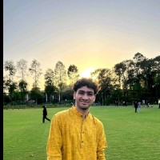
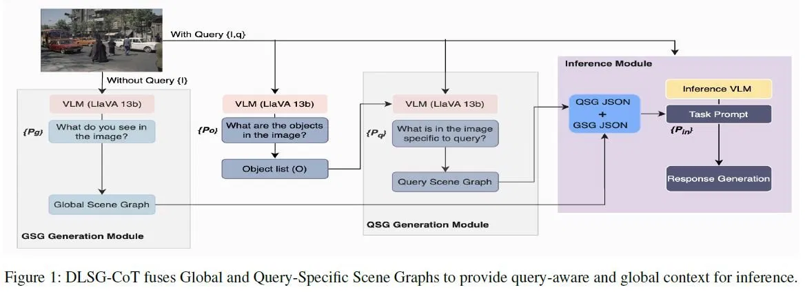
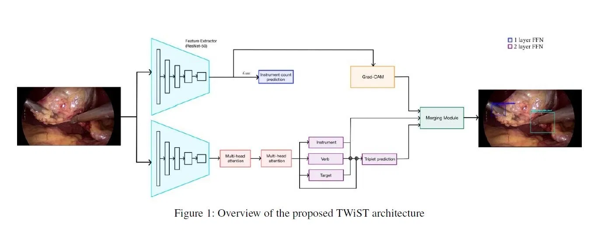
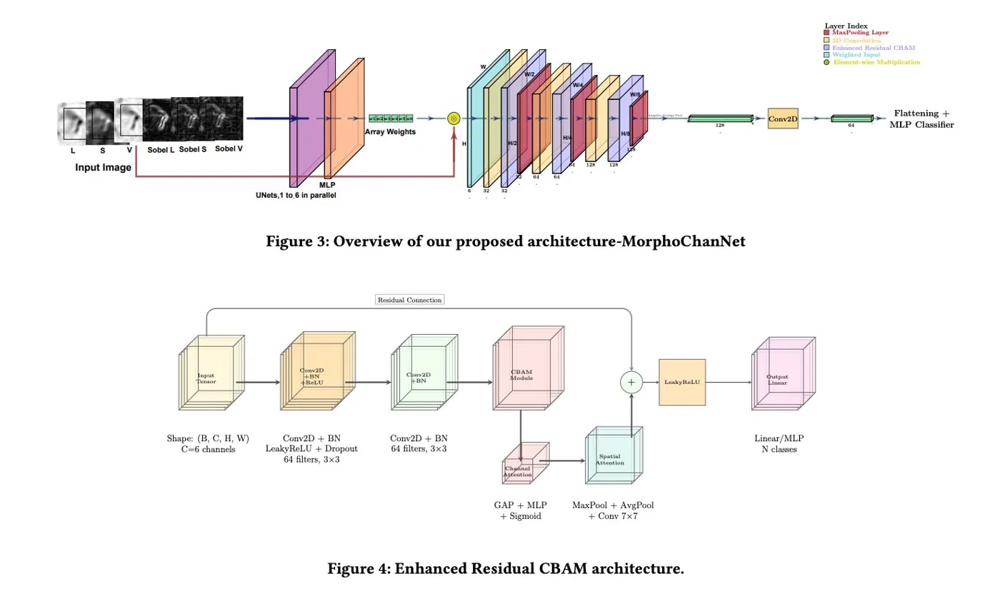

ai engineer / ml researcher / cv person who wandered into agents
Yash Bansal
I build autonomous agentic systems and computer-vision models, with research applied to medical imaging, satellite imagery, and vision-language reasoning.
I like systems that can be measured. I also like CV research, visual>>.

IIT Roorkee,
building.
- base
- IIT Roorkee, B.Tech Biosciences and Bioengineering
- focus
- Agents, RAG, computer vision, lil bit agentic security
- research
- AAAI 2026 Student Abstract, ICVGIP 2025
- side quests
- Agentic security, Web3 infra, and making evals earn their keep
a bit about me
profile.kernel
I am an AI engineer and ML researcher: retrieval pipelines that cite sources, agents that can be audited, and CV models that survive real imaging noise.
My research spans vision-language reasoning, surgical video understanding, cytopathology, and satellite-driven valuation. On the engineering side, I build agentic systems, RAG pipelines, and plugin automations.
selected work
six things, nothing common
verifiable rag
DocVault: Verified RAG Pipeline
os
Policy-QA RAG system with hybrid Pinecone + SQLite FTS5 retrieval, RRF fusion, reranking, DeBERTa-v3 NLI verification, confidence gating, Redis session memory, Celery workers, and Prometheus metrics.
99.5% faithfulness0.5% hallucination ratePinecone + FTS5NLI guard
↗
bio-agent
SysRev Agent: Systematic Review Pipeline
private build
PICO-to-PRISMA systematic-review agent with a raw tool-use orchestrator, 50+ typed tools for search, screening, extraction, synthesis, and verification, isolated subagents for full-text work, source-span claim ledgers, and CLEF TAR replay evaluation.
0.964 recall0.650 WSS@95120 candidatescitation audit
--
agent security
ClaimsPilot: Protected Claims Agent
os
AI insurance-claims agent where the model can recommend decisions, but scoped grants, TEE-style policy checks, placeholder private data, and audit rows decide whether payouts or escalations are allowed. The agent gets a leash; the ledger keeps receipts.
Next.jsT3 SDKRust WASM policyPII placeholders
↗
autonomous agentic sys
Research-Swarm: Multi-Agent Research System
os
LangGraph system with Planner, Researcher, Verifier, Analyst, and Writer agents. It routes across open and closed LLMs, stores memory in Qdrant, grounds outputs in citations, and evaluates quality with RAGAS.
LangGraphQdrantFastAPIRAGAS
↗
CV for Space
Satellite-Driven Real Estate Valuation
os
Multimodal price-prediction system combining satellite imagery through EfficientNet-V2-S, FPN-Lite, and CBAM with tabular features through an MLP, then using late fusion for final valuation.
R2 0.8182RMSE $143KPyTorchEfficientNet
↗
automation plugin
job-hunter: Human-Gated Outreach Plugin
os
Local Claude Code and Codex plugin that turns a resume and target list into researched outreach: fit-scored contacts, verified email enrichment, voice-linted drafts, Chrome-based LinkedIn playbooks, file-backed state, and send gates.
8 MCP toolsverified emailshuman review gate
↗
publications
research.receipts

Zero-Shot Vision Language Reasoning via Dual-layer Scene Graph Chain of Thoughts
Yash Bansal et al. - AAAI 2026 Student Abstract
Scene-graph-first reasoning pipeline that makes VLM answers more structured by separating object relationships from higher-level chain-of-thought reasoning.
vision-language reasoningscene graphszero-shot

TWiST: Temporal Weakly-Supervised Triplets Recognition in Surgical Videos
Pranshu Danani, Yash Bansal et al. - AAAI 2026 Student Abstract
Targets tool-tissue-action triplet recognition in surgical video using temporal weak supervision, reducing dependence on dense frame-level labels.
surgical AItemporal learningweak supervision

Weighted ColorMorphology Feature Fusion for Tuberculosis Bacilli Detection from Cytopathology Images
Yash Bansal et al. - ICVGIP 2025
Medical-imaging classifier for TB bacilli using weighted color and morphology channels to improve sensitivity on noisy cytopathology smears.
medical imagingcytopathologyICVGIP
experience
where the code met reality
Machine Learning Intern - Whyminds.ai
Jun 2025 - Jul 2025
Built a CrewAI-based multi-agent pipeline for LinkedIn publishing: AI-news scraping, NER topic tagging, LLM drafting, activity logging, and scheduled content operations for 5+ posts per week.
Also shipped an OCR extraction pipeline with PaddleOCR and LayoutLMv3 for noisy PAN and tax documents, using regex normalization and confidence thresholds to clean field-level outputs.
CrewAIPaddleOCRLayoutLMv3NER
Medical Imaging Research - Parimal Lab
ICVGIP 2025
Worked on cytopathology image analysis for acid-fast bacilli detection, designing a color-morphology feature fusion model around illumination, saturation, hue, and Sobel edge channels.
This line of work became the ICVGIP paper on TB bacilli detection, with channel attention, reconstruction-loss weighting, focal loss for false positives, and Grad-CAM interpretability.
medical imagingOpenCVPyTorchGrad-CAM
stack / skills
honest inventory
LLM systems and agents
LangGraph, LangChain, CrewAI, OpenAI API, LiteLLM, Groq, memory, agent evaluation.
Retrieval and evaluation
Qdrant, Pinecone, FAISS, LanceDB, SQLite FTS5, BM25, RRF, rerankers, RAGAS, NLI verification.
ML and computer vision
PyTorch, Hugging Face Transformers, scikit-learn, OpenCV, Grad-CAM.
Backend and MLOps
FastAPI, Docker, Celery, Redis, Prometheus, MLflow, W&B, AWS, GCP, Render, MySQL, MongoDB.
Currently poking at
Rust and TypeScript for agent infra / Web3 security builds-vibecoding mostly or learning on the fly. Aim: not let the model steal your APIs.
education
origin story, minus montage
IIT Roorkee
CGPA 8.27
B.Tech. in Biosciences and Bioengineering
Coursework and projects bridge biological systems, computer vision, and production ML engineering.